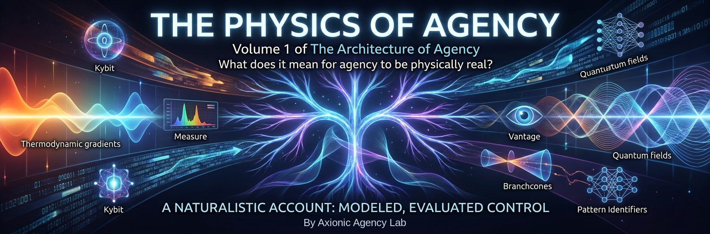

Volume 1 — The Physics of Agency and the Branching Universe

Most philosophy treats agency as a given and asks what agents should believe and do. This volume asks the prior question: what is an agent, physically? The framework built here treats agency as physically embodied control — matter modeling reachable futures and spending work to make later outcomes depend on its policy — and proposes a way to quantify that control. Taking the proposal seriously reframes downstream questions: what choice is, what causes what, how identity is represented across branches, and why there is anything at all. The first three parts develop the physical account. The last two extend it into a more speculative metaphysics, with the change in epistemic register left visible rather than disguised as another deduction from physics.
The argument runs in five parts. Part I develops the physical basis: agency as opposition to drift, the kybit as a proposed unit of control, the claimed thermodynamic bound linking information and control, and three candidate laws — control costs work, control decays, perfect control is impossible. It locates real agents between bacterial chemotaxis and the unattainable AIXI demon, then closes by distinguishing agency from reward. Part II builds the arena: the Quantum Branching Universe represented as a directed acyclic graph of events whose paths are timelines, with Pattern Identifiers to pick things out of it, Measure, Vantage, and Branchcones as the machinery of objective probability, causality as branch structure, observation as physical correlation, and rival interpretations engaged. It ends at the volume’s central junction — the agency framework translated into the branches — and at its honest ledger: alternative policies can be compared through their conditional Measure-weighted consequences, but the proposed general bridge among control, work, and that difference remains underived.
Part III lives inside the branches: Everett’s demon replaces Laplace’s; choice makes a policy-conditioned causal difference without generating futures; no choice is trivial in a chaotically amplifying world; identity is a pattern tracked across weighted event sectors, not a thread through time; and creativity is modeled through variation and selection within cognition. This completes the physical-agency argument. A reader who wants the mechanics without the proposed metaphysical ground can stop after Part III without losing the later volumes’ principal definition of agency.
Part IV changes register and digs beneath physics itself. It proposes the Chaos Reservoir — the totality of random sequences, the prior state of all priors — then asks whether formal and semantic filters can represent selected structure, constructors can supply a bridge to causal organization, and life, consciousness, and time can emerge from that organization. The part closes by defining dynamical coherence as re-identifiability under stated transformations and identity criteria, mapping tiers of reality from the Ruliad to the branching of this afternoon’s weather, and testing the architecture against rival proposals. These are metaphysical conjectures constrained by the earlier framework, not results of thermodynamics or quantum mechanics. Part V develops their largest implications: an optional model of pattern prevalence across branches, and a conditional use of the Modal Realization Principle to dissolve the question of why there is something rather than nothing.
This is one half of the book’s foundational pair. The epistemology that disciplines its claims — conditional truth, Credence, updating, self-location — lives in the Conditionalism volume, while that volume borrows the QBU’s Measure and Vantage in return. The ethics of comparing Measure-weighted consequences lives in the value volume. The cross-links are reciprocal because the foundations are: the physical model constrains what can be claimed, and the epistemology constrains how strongly to claim it.
This volume is in author review. Chapters carry their status openly, and the arguments are held the way the book says they should be held: at the strength the evidence licenses, and no stronger.
Chapters
Part I — The Physical Basis of Agency
- A Genealogy of Agency review
Physics describes matter without assigning it purposes, yet agents made of that matter reliably alter what happens next. This chapter situates the book’s attempt to explain that fact within a lineage running through Popper, Bartley, Everett, and Deutsch. From Popper and Bartley it inherits conjectural knowledge and criticism without privileged foundations; from Everett, unitary quantum mechanics without a fundamental collapse; and from Deutsch, the constructor-theoretic emphasis on which transformations are possible. The chapter argues that these inheritances become something different when joined: Conditionalism extends fallibilism to the conditions of truth, the Quantum Branching Universe offers a coarse-grained representational framework, and agency is treated as physically embodied control. None of those moves follows automatically from its predecessor, and the chapter marks the points at which Axio leaves the inherited road. The result is both an acknowledgment of intellectual debts and a map of the research program the rest of the volume develops.
- Agency Against Drift review
Agency is often defined through intention, reward, or rational choice, leaving its physical basis implicit. This chapter proposes a more basic characterization: an agent is a system that expends work so later states depend on its policy rather than on uncontrolled drift alone. The contrast is not between motion and stillness, or order and disorder, but between outcomes that would occur under the relevant baseline dynamics and outcomes made policy-dependent by the system’s organization. This makes control empirically approachable without pretending that every causal influence is agency. The account also separates the descriptive fact of steering from any judgment that the steering is intelligent, conscious, beneficial, or morally authorized. Thermodynamics constrains the implementation, but it does not supply the agent’s goals or derive values from physics. The chapter leaves open how control should be quantified and how informational descriptions relate to physical work, questions taken up by the kybit and the proposed laws that follow.
- The Kybit review
If agency is control against drift, the framework needs a way to express how much control an intervention realizes. This chapter introduces the kybit as a proposed informational unit in which distributional control can be reported. The measured quantity is the divergence between an outcome distribution under an agent-fixed intervention and an explicit baseline distribution; the kybit is the unit, not the measurement itself. A fair binary event fixed to one outcome supplies the motivating one-kybit case, while more general cases require the model, baseline, variables, and vantage to be stated. The proposal is intentionally model-level: a count in kybits can capture a distributional shift without proving consciousness, authorship, moral standing, or a universal conversion rate to joules. It also distinguishes intervention-based control from mere prediction and correlation. The chapter supplies a common informational vocabulary for later comparisons while leaving calibration, composition, and the physical realization of the measure as open research problems.
- The Three Laws of Agency review
A physical account of agency should generate constraints, not merely a new label for purposeful behavior. This chapter proposes three candidate laws: control requires physical work, unmaintained agency decays, and perfect control is unattainable. The first connects implemented steering to thermodynamic cost, while keeping any numerical kybit-to-work relation dependent on the specified physical realization and equilibrium reference. The second treats agency as an achievement that must be repaired, fueled, and reproduced against noise and degradation. The third locates every finite agent inside an environment it cannot model or command completely, ruling out the fantasy of unlimited sovereignty without denying degrees of control. These are presented as proposed regularities and bounds rather than deductions that already cover every possible substrate. Together they provide the load-bearing physical claims that later chapters test against minimal organisms, active inference, branching, and constructor theory.
- Minimal and Maximal Agents review
Definitions of agency tend either to exclude simple living systems or to count every feedback loop as an agent. This chapter develops boundary cases by placing agency on a spectrum from minimal adaptive control to an idealized maximal planner. Chemotaxis illustrates a small but genuine policy-sensitive capacity: sensing changes action in ways that preserve a narrow set of viable states. At the opposite pole, the AIXI demon represents exhaustive prediction and optimization, an illuminating limit that no embedded physical system can realize. The comparison separates agency from intelligence, consciousness, linguistic sophistication, and moral standing while retaining a threshold above passive causation. It also shows why greater modeling depth and option control can enlarge agency without removing resource limits or environmental dependence. The spectrum supplies operational test cases for the proposed laws, but the precise thresholds and multidimensional comparison of real agents remain matters for further work.
- Agency and Active Inference review
Active inference and the free-energy principle offer a mature vocabulary for systems that maintain themselves by modeling and acting on their environments. This chapter asks how far that vocabulary can be translated into the book’s account of agency as distributional control. It identifies a partial structural correspondence: both frameworks describe organized systems whose internal models guide action toward a restricted range of states, and both connect persistence to active correction. The bridge is deliberately limited, however, because variational free energy, prediction error, precision, thermodynamic work, and kybit counts are distinct quantities rather than currencies with a law-by-law conversion. Under an equilibrium-reference realization, minimum-work results may constrain implementation, but they do not establish a universal energetic price per kybit. Convergence between the frameworks is therefore evidence of a shared problem structure, not proof that either formalism derives the other or explains phenomenality. The chapter leaves a research program: specify the physical realization, the relevant distributions, and the conditions under which the functional analogy becomes quantitatively informative.
- Agency Is Not Reward review
Some accounts explain apparently agentic behavior through reward maximization, empowerment, or a drive to occupy as much future state space as possible. This chapter argues that these models capture important strategies without exhausting agency itself. Preserving options can increase future control, but agents also sacrifice options, accept irreversible commitments, and pursue narrow projects whose value is not reducible to occupancy. Likewise, reward signals can train or describe a policy without constituting the authored objective that the policy serves. The chapter uses these contrasts to separate an agent’s capacity to steer from any particular content assigned to its preferences. Maximum occupancy remains a useful instrumental tendency under specified games and constraints, not a universal terminal aim written into physics. The upshot is a pluralistic control account: reward and option preservation can explain parts of behavior, while agency names the more general capacity that makes such strategies available.
Part II — The Branching Arena
- The Quantum Branching Universe review
Quantum mechanics supplies a state and dynamics, but philosophical arguments often smuggle in an intuitive picture of worlds, observers, and alternatives. This chapter proposes the Quantum Branching Universe as an explicit representational model: a directed acyclic graph of events whose paths are timelines and whose sectors carry physical weight. The model treats branches as emergent, approximate structures supported by decoherence rather than exact universes created at every interaction. Pattern Identifiers pick out systems across the graph, while later chapters add Vantage, Measure, and Branchcones to specify what alternatives are being compared. The QBU is not offered as a new physical theory, a proof of Everettian metaphysics, or a claim that every imaginable history occurs. Its purpose is to make the book’s counterfactual and agency claims auditable by stating the coarse-graining and event structure they presuppose. The chapter establishes the arena for the volume while leaving the interpretation of probability and the mapping from fundamental dynamics to particular branch descriptions open.
- Measure, Vantage, Branchcone review
A branching representation does not become probabilistically meaningful until it specifies which alternatives are relevant, from where, and with what weights. This chapter introduces three linked tools. Measure assigns physical weight to defined event sectors; Vantage fixes the standpoint and information relative to which alternatives are represented; and a Branchcone collects the future sectors reachable from that vantage under the model. Their combination is meant to prevent branch counting, observer-free probability talk, and unnoticed changes of sample space. The framework keeps physical Measure distinct from epistemic Credence: one describes weighted structure in the model, while the other records an agent’s uncertainty about propositions. Causal and decision-theoretic uses therefore require explicit conditioning, coarse-graining, and identity criteria rather than treating the graph as self-interpreting. The chapter provides the probability toolkit used throughout the book, while the normative bridge from physical weights to rational expectation remains a separate and contested argument.
- Causality and Counterfactuals review
Causal claims compare what happens under one antecedent with what happens under an alternative, but ordinary intervention language can wrongly imply that every cause must be manipulable by an agent. This chapter recasts causation as a counterfactual contrast between matched, weighted branch-sets. The central quantity compares the Measure-weighted prevalence of an outcome under (a) and not-(a), with the causal model and background conditions indexed explicitly rather than treated as observed events. Branching contributes physically represented and weighted alternatives, allowing contrasts for supernovae, wars, and other non-manipulated causes. It does not, however, isolate the antecedent from its own causes: common provenance is not the absence of confounding. Structural assumptions, admissible adjustment, or another stated no-confounding condition must still do that work, and the do-operator remains one interventional way to construct such a contrast. The result broadens causal analysis beyond agency without claiming that branch structure alone solves causal identification.
- The Observer Joins the Branch review
Measurement problems become paradoxical when the observer is treated as external to the physical process being described. This chapter places observers inside the branching model and treats observation as the formation of durable physical correlations among system, apparatus, record, and observer. Schrödinger’s cat and Wigner’s friend then become tests of where a model draws its event sectors and how different Vantages encode available records. The account does not invoke consciousness as a collapse mechanism or grant observers a privileged power to select reality. Nor does it erase the interpretive problem: decoherence explains effective record stability, while the choice of coarse-graining and the meaning of weights still require argument. The key move is methodological—an observation changes the observer’s physical state and therefore belongs in the same causal graph as what is observed. This internalized observer prepares the later analysis of self-location, identity across branches, and the distinction between physical Measure and an observer’s Credence.
- The Interpretation Wars review
The Quantum Branching Universe risks being mistaken for a declaration that one interpretation of quantum mechanics has been proved. This chapter tests that risk by comparing the framework with QBism, local realism, collapse views, and Everettian approaches. It asks which disagreements concern empirical dynamics, which concern the interpretation of probability and records, and which arise from different choices of ontology or explanatory purpose. The QBU retains unitary evolution, weighted alternatives, and emergent branch structure as a useful model, but it does not claim an exact world count or derive the Born rule’s normative use from branching alone. QBist emphasis on agent-relative expectation and realist emphasis on physical structure each identify constraints the framework must respect, even where it declines their full interpretation. Bell-type results narrow the available realist pictures without mechanically selecting the book’s preferred representation. The chapter leaves the QBU as an explicit, revisable modeling choice whose value depends on the work it performs in causal and agency analysis.
- Agency in the Emergent Multiverse review
The volume has so far developed a physical account of control and a separate representation of weighted quantum alternatives. This chapter brings them together and asks what it means for an embedded agent to steer within an emergent multiverse. Policies are compared through their conditional Measure-weighted consequences, so agency appears as a physically implemented difference between distributions rather than the creation or deletion of branches. The proposed laws still constrain the implementation: steering requires work, decays without maintenance, and remains bounded for finite agents. Yet the chapter also records the central gap. No general theorem presently converts thermodynamic work, free-energy quantities, informational divergence, and branch-weighted outcome differences into one universal scale. The synthesis is therefore a structured research proposal rather than a completed reduction. It closes the volume’s core physical sequence by stating both what the combined machinery can already represent and what a mature derivation would still have to supply.
Part III — Choice Within the Branches
- Everett's Demon review
Laplace’s demon imagines a complete predictor for a single deterministic future, an ideal poorly matched to a branching quantum description. This chapter replaces it with Everett’s demon: an embedded reasoner that may know the quantum state and dynamics yet still confronts self-location across future records. Quantum events become historically consequential when amplification carries microscopic alternatives into durable macroscopic differences. The resulting uncertainty is not necessarily ignorance of a hidden unique outcome; within the model, it concerns which future record an observer-copy will occupy and how much Measure different sectors carry. This does not make every macroscopic event fundamentally random or turn decoherence into an exact branching rule. It instead reframes perfect prediction by separating dynamical knowledge from indexical location and coarse-grained outcome identity. The demon establishes the conceptual setting for choice within branches, where an agent’s policy can matter causally without selecting one world from outside the physics.
- Quantum Free Will review
Free will is often framed as a contest between deterministic law and an uncaused power to choose otherwise. This chapter proposes a different criterion suited to an embedded agent in a branching model. A choice matters when different policies make a causal, policy-conditioned difference to the Measure-weighted distribution of later outcomes. The agent does not create futures, delete branches, or move Measure between them; its implemented policy is one of the physical conditions under which the relevant contrasts are evaluated. Randomness alone is therefore insufficient, since an uncontrolled quantum event supplies alternatives without authorship, while deterministic components can still implement an agent’s control architecture. The proposal separates causal efficacy from metaphysical exemption and leaves reflective authorship to later volumes. Its upshot is modest but testable: freedom begins with policy-sensitive steering inside physics, not with an escape from physical explanation.
- No Trivial Choices review
Everyday judgment divides choices into consequential and trivial, but chaotic dynamics make that division depend on scale and horizon. This chapter argues that small policy differences can be amplified through sensitive dependence, interaction, and path-dependent institutions into large downstream changes. The claim is not that every gesture transforms history or that causal importance can be read from branch proliferation. Rather, a choice’s significance is contrast-relative: it depends on which alternatives, variables, time horizon, and outcome criteria the analysis fixes. The chapter develops a causal lattice in which local interventions propagate through networks of later dependencies, sometimes damping out and sometimes becoming decisive. This makes radical contingency compatible with bounded agency and with uncertainty about remote consequences. The practical upshot is neither paralysis nor grandiosity, but humility: agents should treat apparently small choices as situated causal inputs whose reach must be investigated rather than assumed.
- A Gigaplex of Parallel Lives review
Branching descriptions unsettle the ordinary picture of one person moving along one future line. This chapter models identity across alternatives through Pattern Identifiers and weighted event sectors rather than an indivisible thread or soul. A present person can have multiple future continuers that preserve different degrees and features of the earlier pattern, with no requirement that identity be all-or-nothing across every coarse-graining. The “gigaplex” is a toy representation of those related lives, not a census of exact worlds or proof that every imaginable biography exists. Measure matters to the representation, but it does not distribute a moral substance or make low-weight continuers unreal. The analysis exposes questions about anticipation, responsibility, and concern that physics alone does not settle. It leaves identity as a model-governed relation of continuity and re-identifiability, preparing the later treatment of coherence and the epistemology of self-location.
- Creativity as Virtual Evolution review
Creativity appears to produce novelty in a way that simple optimization language often fails to capture. This chapter models creative thought through a functional analogy with evolution: cognition generates variants, tests them against constraints and goals, and retains some as models, plans, artifacts, or habits. The process occurs within an agent’s representational and behavioral repertoire rather than in a separate universe of fully realized alternatives. Selection language is therefore explanatory only where mechanisms of generation, evaluation, memory, and reinforcement are supplied; evolution is not a hidden designer running toward progress. Examples from search-guided self-play and human imagination illustrate how structured exploration can yield outcomes not explicitly enumerated in advance. The chapter connects novelty to agency because selected ideas become persistent causes only when agents embody and act on them. It leaves open how creative spaces are generated, how evaluation criteria change, and when the evolutionary analogy becomes quantitatively useful rather than merely suggestive.
Part IV — Metaphysical Extension: Chaos and Coherence
- Infinite Randomness review
Infinite random structures can contain every finite pattern, tempting the inference that randomness alone explains worlds, observers, and meaning. This chapter examines that temptation through normal sequences, the infinite monkey idea, and Boltzmann-brain-style cases. Mere occurrence is shown to be too cheap: if every finite arrangement appears somewhere, existence by itself does not explain prevalence, stability, causal organization, or why observers should expect one class of records rather than another. The chapter distinguishes mathematical inclusion from physical realization and both from an explanatory measure over observations. It also introduces the author’s work on random-sequence structure as an example of how local regularities can be found without turning the sequence into a chooser. Infinite randomness supplies raw possibility, not constructors, persistence, or warranted typicality. The analysis motivates the speculative Chaos Reservoir that follows while preserving the burden of explaining how coherent structures are selected and maintained.
- Chaos as Foundation review
Explanations of order usually begin with laws, initial conditions, or a space of possibilities whose own origin is left unexamined. This chapter proposes the Chaos Reservoir as a speculative terminus: the unrestricted totality of random sequences, described as the prior state of all priors. Within that proposal, structured worlds are not generated from literal nothing but identified through filters that pick out regularities already representable in the reservoir. The move is metaphysical rather than a result of quantum mechanics, thermodynamics, or algorithmic information theory, and it does not make the reservoir a physical substance or hidden agent. Nor does inclusion explain realization; a pattern’s presence in a sequence says nothing yet about causal persistence, observation, or weight. The proposal is valuable only if later machinery can distinguish coherent, constructor-supported organization from arbitrary finite coincidence. The chapter therefore opens the volume’s speculative register and hands its central burden to coherence filters.
- Coherence Filters review
If an unrestricted reservoir represents every finite pattern, some criterion must distinguish a world-like structure from accidental fragments. This chapter proposes coherence filters as rules that identify organized subsets without claiming to manufacture the underlying possibilities. Formal filters capture compressibility, consistency, recurrence, and lawful relation; semantic filters add interpretation relative to models, observers, and identity criteria. The distinction keeps filtering from becoming a disguised creator and makes each selection answerable to stated conditions. A filter can reveal structure for a purpose while failing to establish that the selected pattern is physically realized, causally autonomous, or uniquely privileged. Multiple filters may carve the same reservoir differently, and their success depends on what transformations and observations they preserve. The chapter supplies a bridge from undifferentiated possibility to candidate organization, but it leaves causal power unresolved. That next burden motivates constructors: structures must do more than be describable if they are to maintain and reproduce order.
- Constructors review
Description alone does not explain how an organized pattern persists or produces reliable effects. Drawing on constructor theory, this chapter shifts attention from states to transformations that can be performed repeatedly while the enabling structure retains its capacity to act. Constructors provide a possible bridge between filtered regularity and causal organization: catalysts, cells, tools, and agents matter because they help make classes of transformations possible. The chapter distinguishes this functional role from a claim that constructors are fundamental substances or that constructor theory already derives the book’s agency laws. Time, work, error correction, and environmental support remain part of every concrete realization. The proposal also clarifies why accidental copies and momentary patterns lack the same explanatory standing as systems able to maintain or reproduce their organization. Constructors thus supply a candidate mechanism by which coherence becomes causal power, while the emergence of life, consciousness, and temporality remains to be argued rather than assumed.
- Life, Consciousness, and Time review
Having introduced filters and constructors, the volume can ask how increasingly rich forms of organization might arise. This chapter offers a speculative progression from self-maintaining systems to life, from adaptive modeling to consciousness, and from ordered change to lived time. Life is associated with constructor-supported persistence and repair; consciousness is approached through recursive models that include the modeling system; and experienced temporality is linked to memory, anticipation, and asymmetric control. These are proposed structural relationships, not derivations of phenomenality or proofs that every self-model is conscious. The sequence also avoids treating evolution as aimed at minds: each stage depends on contingent organization and selection under local constraints. What the proposal supplies is a common vocabulary for asking when coherence begins to regulate its own continuation and represent its alternatives. The chapter leaves the explanatory gap visible and hands the problem of stable identity across transformation to the account of dynamical coherence.
- The Shape of Coherence review
Appeals to coherence often praise an intuition without stating what remains coherent through change. This chapter proposes a more operational account based on re-identifiability under specified transformations. A pattern is dynamically coherent when a model can track it across changes at a stated scale using explicit criteria of identity, tolerance, and observation. The definition makes coherence relational rather than intrinsic: the same process may remain identifiable under one coarse-graining and dissolve under another. It also separates persistence from stasis, allowing living systems, institutions, and agents to preserve organization by changing their components. The proposed invariant is therefore not a universal essence and does not by itself establish value, consciousness, or agency. Its payoff is methodological: claims that something survives, evolves, or acts must name the transformations and identity rules under which that claim holds. The chapter provides the formal shape used to organize the following tiers of reality while leaving the choice among useful identity criteria open to domain-specific evidence.
- The Tiers of Reality review
Debates about what is real often force a choice between fundamental physics and the higher-level entities used by every successful science. This chapter proposes a tiered account in which reality is indexed to stable patterns, explanatory scales, and the transformations under which they remain identifiable. The fact that ice floats is real at a molecular and thermodynamic level even though no single fundamental equation contains “floating” as a primitive. The same reasoning can be extended, more speculatively, from local physical regularities through observers and branching descriptions to broad computational proposals such as the Ruliad. Higher tiers need not be independent substances, but neither are they arbitrary when they support compression, prediction, intervention, and cross-context re-identification. The hierarchy is an analytical map rather than evidence that every named tier shares one measured quantity or ontological status. It prepares a disciplined comparison with rival architectures by asking what each framework treats as primitive, emergent, explanatory, and testable.
- Rival Architectures review
A speculative metaphysics earns credibility by surviving comparison with alternatives rather than redescribing them as versions of itself. This chapter places the proposed architecture beside simulation arguments, Langan’s CTMU, Gödelian limits, computational universe models, and theological explanation. Each rival is reconstructed at the level of the problem it addresses: external implementation, self-containing description, formal incompleteness, generative computation, or ultimate cause. The comparisons identify partial overlaps without claiming that all proposals are views of one literal mechanism. Simulation hypotheses relocate rather than terminate explanation; Gödel constrains sufficiently strong formal systems under specific conditions; and appeals to God or self-processing language require independent reasons before they can close the regress. The chapter also turns the same scrutiny inward, emphasizing that the Chaos Reservoir, filters, and constructors remain proposals with unresolved realization and measure questions. Its upshot is comparative rather than triumphant: the framework earns only the advantages its explicit distinctions and open burdens support.
Part V — Persistence and Existence
- The Quantum Metagame review
Once patterns are represented across weighted branches, one can ask which forms of organization remain prevalent under repeated change. This chapter proposes a quantum metagame as an optional model of that persistence: strategies and structures differ not only in local success but in how broadly their continuers remain represented across relevant event sectors. The approach links robustness, reproduction, and control without treating the multiverse as a tournament organized toward progress. Persistence is a precondition for later influence, not a hidden player that chooses winners or supplies objective value. The analysis also depends on Vantage, identity criteria, coarse-graining, and the selected horizon; change those conditions and the prevalence comparison may change. The model may illuminate why some agent-like organizations recur, but it does not prove that evolution optimizes agency or that high-Measure persistence is morally good. The chapter leaves the metagame as a speculative bridge between branching dynamics and existential questions, not as a completed physical law.
- Why There Is Something Rather than Nothing review
The question of why there is something rather than nothing invites an explanation outside the totality it asks to explain. This chapter argues that the demand may reach a terminus rather than a final external cause. Using the Modal Realization Principle conditionally, it explores whether every genuinely possible coherent structure is realized in some form, so that asking why reality exists mistakes existence for one contingent selection from an external menu. The argument depends on the optional metaphysics developed in the preceding chapters and is not derived from the QBU, quantum mechanics, or constructor theory. It also does not show that every describable object is possible, that all structures receive equal Measure, or that realization explains observation and typicality. Rival stopping points—brute fact, necessary being, simulation, or self-explaining law—remain available and carry their own burdens. The proposed dissolution is therefore a candidate endpoint: if the modal premise holds, existence may be the condition under which explanations occur rather than one more event requiring a cause.